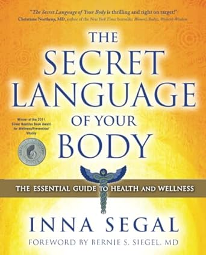

Below are samples of ways to work with your energy
| I came across Qigong video a few years ago, and I started to like Qigong. Last week when I had pain in shoulder blades area, I used Qigong and Tai Chi short videos to improve how I felt. It was lovely to feel warmth in the area that had been sore before. Lovely. | |
| I first learned about Figure 8 from Donna Eden (Eden Energy Medicine). I am sharing Family Friday: Tracing Figure 8 video here, as she talks about family, pets. Myself and my kids have benefitted from using figure 8 to clear aches, symptoms. | |
|  | I have found Inna's book very useful. Her tips how to use colour to reduce fever, or sudden skin reaction. Her wisdom has guided me to understand better what emotions and situations have caused certain health issues, symptoms. It has been lovely to clear earache, skin reactions and so on with natural methods, understanding body's messages. I am sharing link to her ebook, as I find it so handy to have it available on the phone when needed, and ebook makes it easier to search all the terms re skin or any other symptoms, body parts. Forever grateful. ebook sample pages on Amazon |
| Myself and my kids have benefitted from EFT Tapping on many occassions. Sometimes I mix EFT with Inna Segal's guidance, eg using light blue colour to cool down sudden skin reaction, and then using EFT Tapping to find out what happened. EFT Tapping has helped us to clear fear of water, anxiety, and aches/pains. |
*Energy Work website is created as a project, part of Software Development course. All of the information is based on Website creator's personal experience with various Energy Work tools. Website's creator has no medical background. Energy Work and various tools mentioned on this website, are meant for personal awareness only, they are not meant to replace medical care, doctor's orders or prescriptions. Website's Creator values medical staff and medicine, medical treatments, as well as natural energy tools which can support wellbeing. Website Creator takes no responsibility for website visitor's choices. I do not benefit from any of the products or websites mentioned on this website.